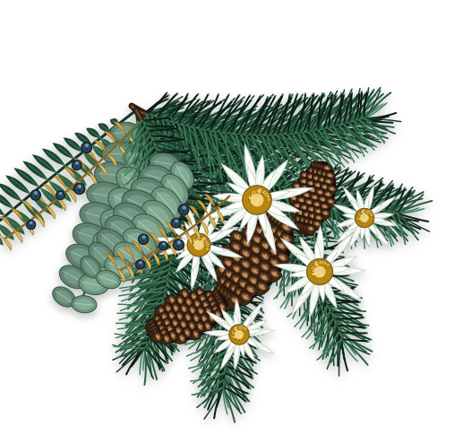
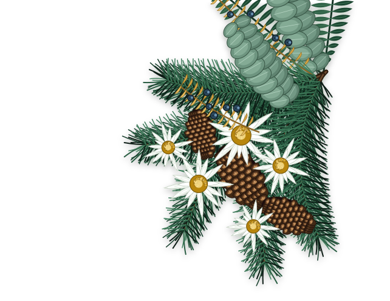
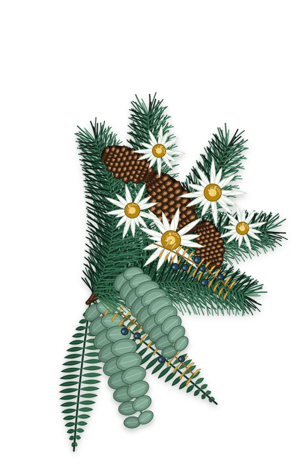
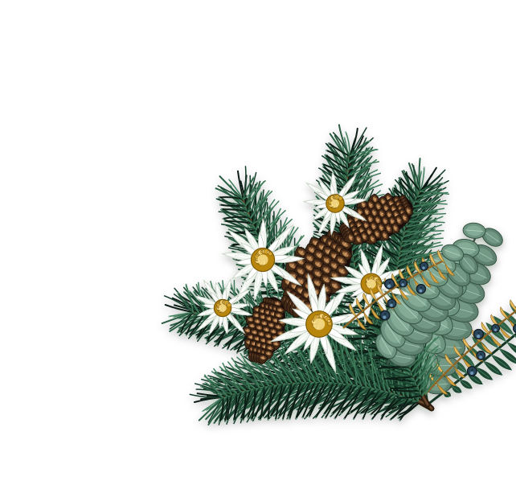
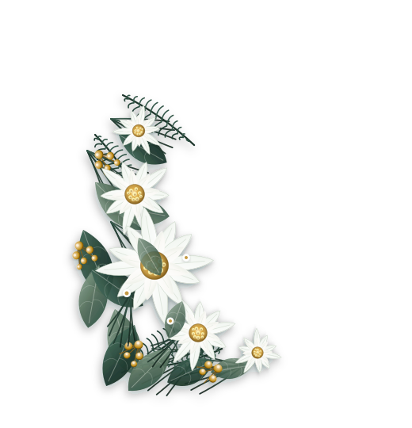
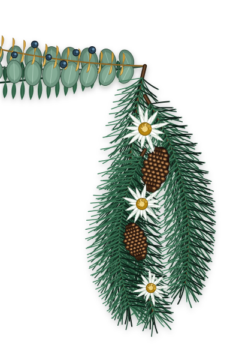
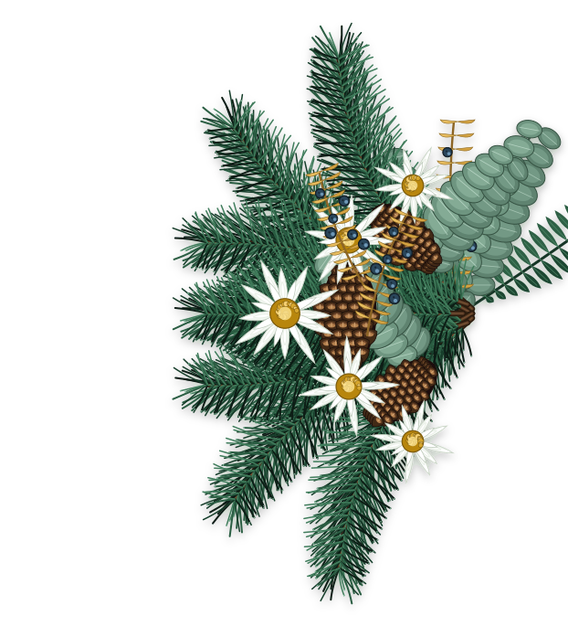

The Wedding of
Arga & Maya
Kepada Bapak/Ibu/Saudara/i:
Nama Tamu




The Wedding of






"Dan di antara tanda-tanda (kebesaran)-Nya ialah Dia menciptakan pasangan-pasangan untukmu dari jenismu sendiri, agar kamu cenderung dan merasa tenteram kepadanya, dan Dia menjadikan di antaramu rasa kasih dan sayang."
Dengan memohon rahmat Allah SWT, kami mengundang Anda untuk merayakan cinta kami:

Putra pertama dari Bapak Hendra Dirgantara & Ibu Retno Wulandari

Putri kedua dari Bapak Danu Kusuma & Ibu Ratih Anggraini
Tiga fase indah perjalanan cinta kami di bawah naungan lereng pegunungan
Sebuah perjumpaan tak terduga di tengah sejuknya lereng pegunungan Parahyangan yang mengawali getaran rasa dan membuka lembaran takdir hidup kami.
Diiringi hembusan angin sejuk hutan cemara dan hangatnya cahaya senja, dua impian menyatu dalam satu ikrar tulus untuk saling melengkapi dan melangkah bersama.
Dengan restu kedua orang tua dan sanak keluarga, kami mengikrarkan janji suci pernikahan untuk mengarungi bahtera rumah tangga yang sakinah, mawaddah, dan warahmah.

"Captured Moments on the Highland Trail"
Jadwal prosesi pernikahan di dataran tinggi pegunungan kami
Sabtu, 25 Oktober 2025
Pukul 08.00 - 10.00 WIB
Pine Valley Glass Chapel, The Highland Sanctuary, Lembang, Bandung Barat
Sabtu, 25 Oktober 2025
Pukul 16.00 – 20.00 WIB (Highland Sunset Hour)
Highland Grand Lawn & Glass Ballroom, The Highland Sanctuary, Lembang

Koleksi potret cinta kami di tengah keteduhan alam pegunungan

Alpine Whispers
The Bride
The Groom
Under the Mountain Twilight
Doa restu Anda merupakan karunia terindah bagi kami. Namun apabila hendak memberikan tanda kasih, Anda dapat menyalurkannya melalui:
Sampaikan kehadiran serta doa restu bagi kami
Selamat berbahagia Arga & Maya! Semoga ikatan pernikahan ini senantiasa kokoh bagaikan gunung dan dipenuhi keberkahan hingga surga-Nya.
Barakallahu lakuma wa baraka 'alaikuma wa jama'a bainakuma fii khoir. Selamat menempuh hidup baru sahabat terbaikku!
Merupakan suatu kehormatan dan kebahagiaan bagi kami apabila Bapak/Ibu/Saudara/i berkenan hadir serta memberikan doa restu bagi lembaran baru hidup kami.
Wassalamu'alaikum Warahmatullahi Wabarakatuh
Kami yang berbahagia,
© 2025 THE WEDDING OF ARGA & MAYA · ALL RIGHTS RESERVED